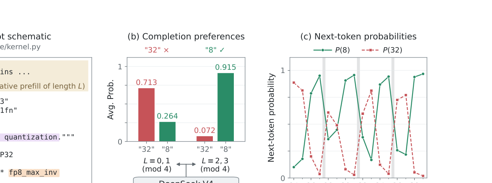
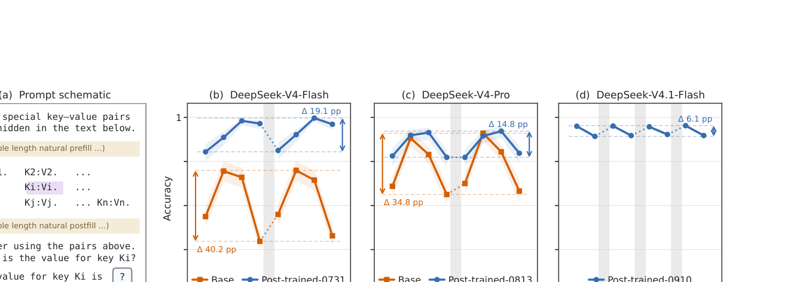
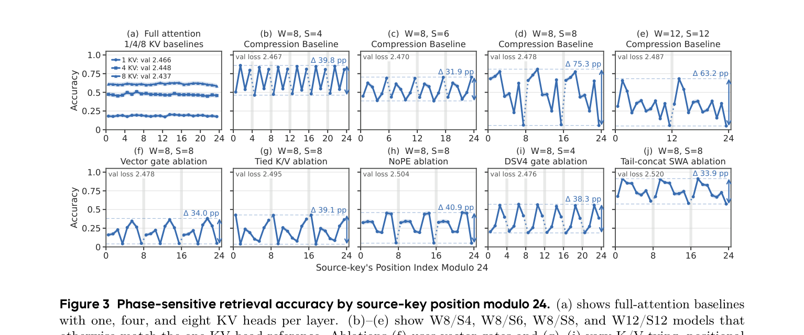
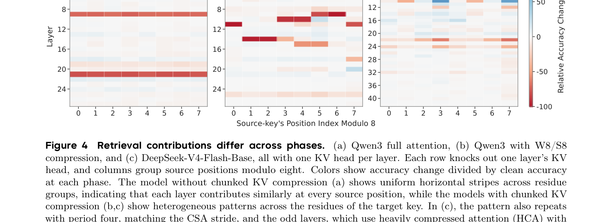
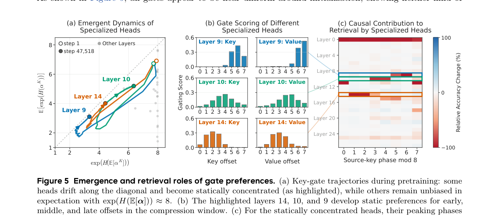

分块KV缓存压缩把连续token窗口压成更少的缓存条目，省内存省算力。但它也引入了一个新坐标：相位。字节跳动Seed团队发现，相同信息在某个相位好找，在另一个相位难找，长上下文检索准确率最多能差40个百分点。
分块KV缓存压缩按固定步长把连续token窗口压缩成更少的缓存条目。压缩窗口每S个token开始一个，token除了绝对位置，还多了一个相对窗口边界的坐标：相位，即位置对S取模。把输入平移几个token，内容和相对位置不变，但哪些token被压到一起变了，同一信息可能以不同保真度被保留。
团队用DeepSeek-V4的官方推理代码做了一个动机实验：让模型补全一段代码，在前面加装饰性docstring并改变其长度。正确答案是8，但模型在装饰长度L mod 4为0或1时更倾向于错误的32，为2或3时才选对8。预测每4个token翻转一次，正好对应DeepSeek-V4压缩步长S=4。

为系统测量这种效应，团队转向可控的键值检索任务：128K token的prompt放1.6万个键值对，问中间某个key的值。按source key位置对8取模分成8组，各组prompt长度、查询位置、键值绑定完全相同，只有相位不同。
DeepSeek-V4系列的base checkpoint呈现尖锐的相位敏感性，最大差距达40.2个百分点。后训练提高了准确率并缩小差距，但post-trained模型的差距依然显著。V4.1-Flash差距最小，但4个偶数相位组仍全面高于4个奇数组。只看平均准确率会掩盖这些跨相位的差异。

DeepSeek-V4与标准Transformer的差异不止分块KV压缩，为验证压缩是根因，团队从零预训练了一个Qwen3-0.6B衍生模型家族，只改KV压缩设计。所有压缩模型都呈现周期性波动，全注意力基线则保持平坦。周期跟着步长走：W8/S4是4 token周期，W8/S8是8 token，W12/S12是12 token。去掉旋转位置编码、把门换成均匀平均，相位敏感性依然存在。
值得注意的是，只看平均指标会误导：W8/S8压缩模型的平均准确率和验证loss与全注意力基线几乎持平，但最差相位比基线低9.9个百分点。平均数好看，弱点藏在相位里。

检索要经过读写压缩条目的注意力头，有的头可能在某些相位更卖力。用因果干预法一次敲掉一个KV头，看各相位检索准确率掉多少。无压缩模型中各层掉得均匀；W8/S8压缩模型里某些头的损失集中在一两个相位，呈现与压缩步长同周期的异质模式。
在DeepSeek-V4-Flash-Base上同样：最大损失的头影响所有相位但不均匀，少数头只影响特定相位。这种不对称不止是层的属性，单个头层面也存在。

敲除实验说明哪些头重要，没说明为什么。自然的候选是压缩门：决定每个偏移在压缩条目中占多少权重的门。跟踪训练过程发现，一些头的门从均匀初始化出发，逐渐向固定偏移集中，形成静态偏好。比如Layer 14、10、9的头分别偏好某个偏移及其后继，像bigram一样。
这些峰值恰好对应敲除实验中该头起作用的相位。在相位0处，最大的敲除损失来自静态集中的头。干预gate循环偏移的实验进一步证实，门偏好对窗内检索不对称有因果贡献。

团队还分析了理想化检索模型：在注意力诱导的压缩任务中，最优压缩器确实会对特定相位表现出偏好，而梯度流会把门推向持久偏好。直觉是，当未来查询未知时，训练偏爱选择性保留，即使这意味着某些相位被系统性亏待。
这解释了为什么平均准确率不够：评估分块KV压缩模型时，可靠性还应在各相位上分别考察，比如把输入平移几个token而保持查询信息不变，看性能是否稳定。
参考：https://arxiv.org/pdf/2609.36322